7 月 15 日：Slot-RAE 等视觉表征论文归档
本页按日期归档近期论文，保留优先级、主题、来源与方法线索，方便回看同一批工作的研究脉络。
先读 Slot-RAE。把 object-centric learning 直接放到冻结 VFM 语义特征空间和 DiT 解码里，贴近 DINO/RAE/无监督对象发现主线。 其余论文按 P1/P2 与主题顺序扫读，重点看方法图、消融设置和是否能迁移到通用视觉表征。
论文索引
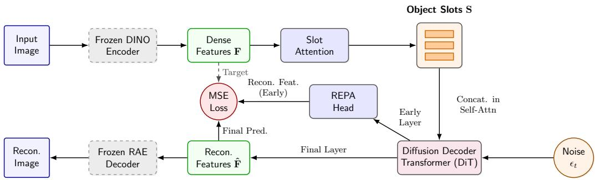
Slot-RAE: Streamlining Object-Centric Learning via Direct Representation Auto-Encoders
高相关；详见方法、贡献和实验边界。
方法：把 object-centric learning 直接放到冻结 VFM 语义特征空间和 DiT 解码里，贴近 DINO/RAE/无监督对象发现主线
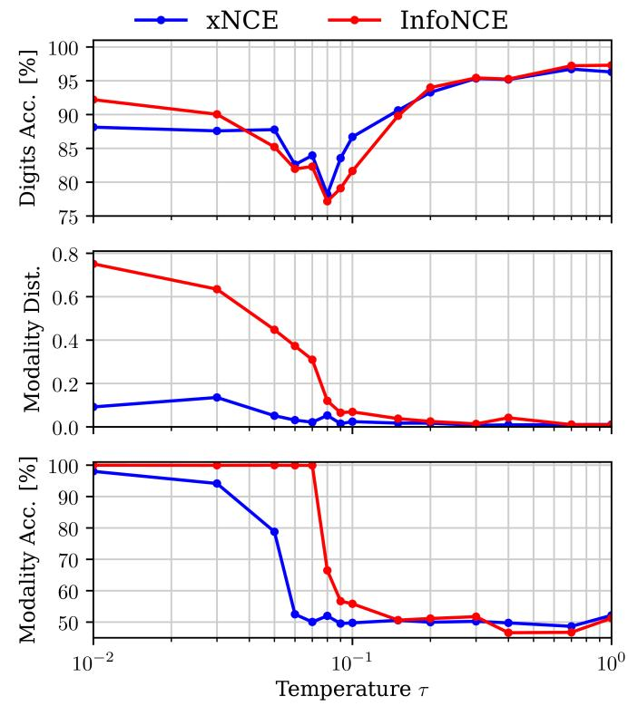
On the modality gap and the contrastive loss in multi-modal representation learning
高相关；详见方法、贡献和实验边界。
方法：直接解释 CLIP-style dual encoder 的 modality gap，并给出 xNCE 这种 contrastive objective 改法
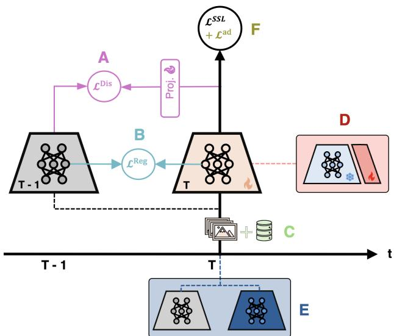
Lifelong Representations: A Survey on Continual Self-Supervised Learning for Vision Models
高相关；详见方法、贡献和实验边界。
方法：系统梳理 continual self-supervised learning for vision，适合作为长期预训练/持续学习路线图
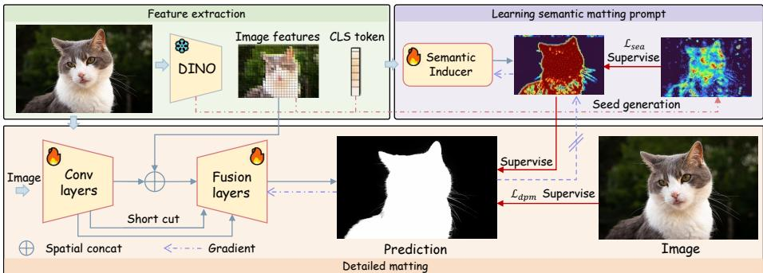
Self-supervised Automatic Matting
高相关；详见方法、贡献和实验边界。
方法：用冻结 self-supervised ViT 特征生成语义 matting prompt，展示 SSL 表征可承担 annotation-free dense task
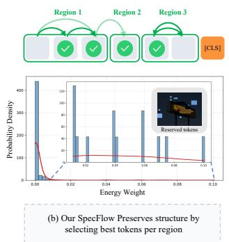
Spectral Heat Flow for Conservative Token Condensation in Vision-Language Models
中高相关；详见方法、贡献和实验边界。
方法：训练-free visual token condensation 直接影响 VLM 视觉 token 的保真压缩，和视觉表征读出效率强相关
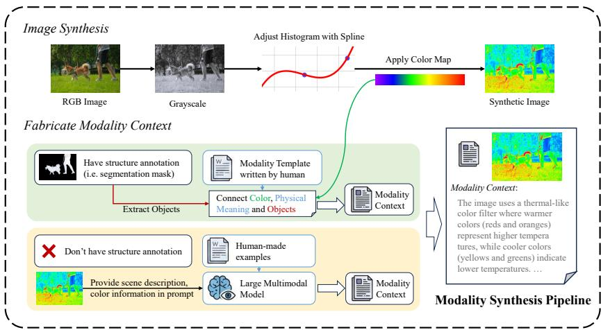
Generalize LMMs to Versatile Visual Modalities via Fabricated Modality Synthesis
中高相关；详见方法、贡献和实验边界。
方法：用 fabricated modality synthesis 训练 LMM 泛化到未见视觉模态，和 modality-agnostic visual representation 直接相关
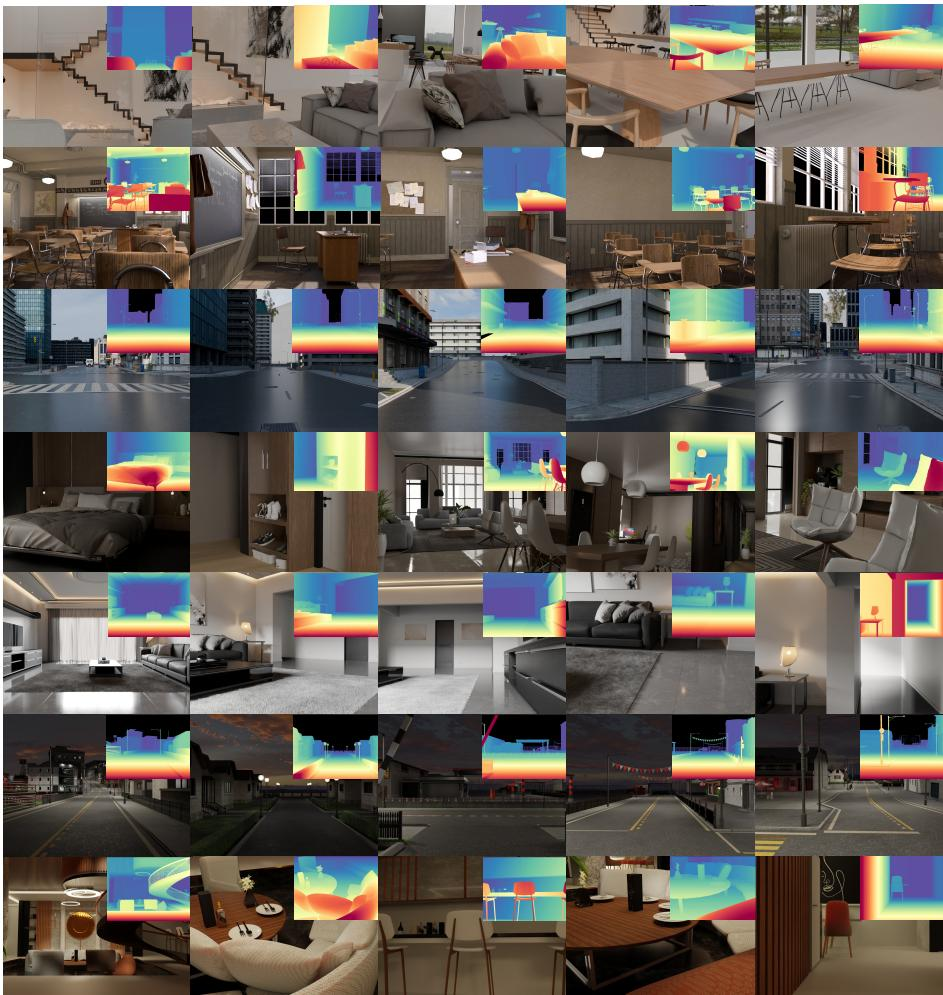
FoundationGeo: Learning Spatial Pixel-Wise Fields for Monocular Metric Geometry
中高相关；详见方法、贡献和实验边界。
方法：以 DINOv3 初始化几何 foundation model，关注跨域 metric geometry 和 pixel-wise field
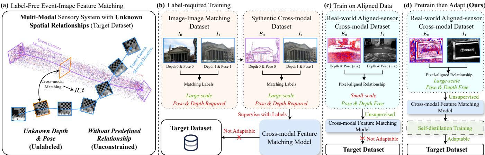
Label-Free Target-Domain Adaptation for Unconstrained Event-Image Feature Matching via Dual-Stage Distillation
中高相关；详见方法、贡献和实验边界。
方法：事件-图像 feature matching 虽偏传感器融合，但 label-agnostic distillation pretraining + contrastive objective 有迁移价值
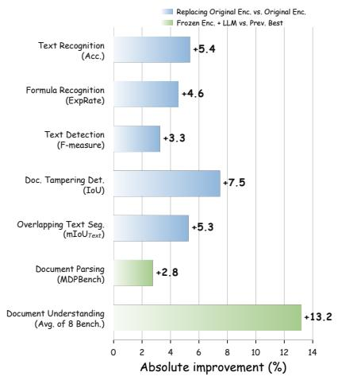
MonkeyOCRv2: A Visual-Text Foundation Model for Document AI
中相关；详见方法、贡献和实验边界。
方法：文档视觉-文本预训练不等同自然图像 SSL，但能补视觉 token 对文字、公式和版式的表征短板
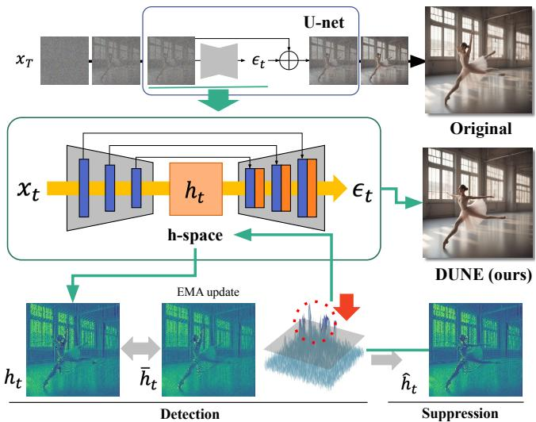
Unified Backbone Refinement for Diffusion Models via Internal-Latent Analysis
中相关；详见方法、贡献和实验边界。
方法：DUNE 主要是 diffusion generation refinement，但其 internal-latent analysis 有助理解生成 backbone 的视觉表征控制点
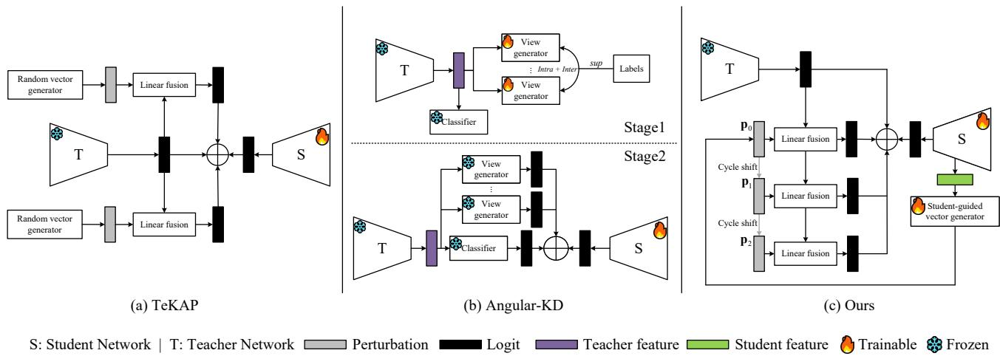
Single-Teacher View Augmentation: Enhancing Knowledge Distillation with Student-Guided Perturbations
中相关；详见方法、贡献和实验边界。
方法：学生引导的 single-teacher view augmentation 对蒸馏式自监督/压缩有参考，但不是视觉 foundation 预训练本身